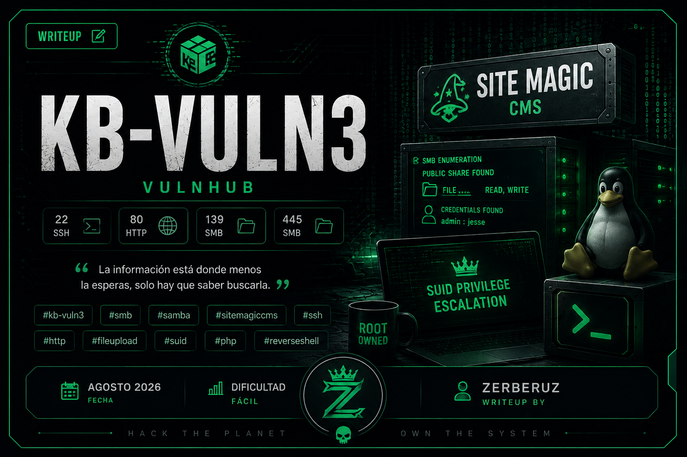

KB-VULN3
Plataforma: VulnHub · Dificultad: Fácil · Fecha: Agosto 2026
Reconocimiento
sudo arp-scan -I eth0 --ignore-dups
Resultado:
192.168.1.103Una vez obtenida la IP vamos a detectar puertos abiertos en la máquina víctima:
nmap -p- --open 192.168.1.103 -sS -n -Pn -vvv --min-rate 5000 -oG allPorts
El output lo ingresamos en el archivo allPorts y con la utilidad de extractPorts podemos extraer los puertos de manera más visual y tenerlos copiados en el xclip.
[*] Extracting information...
[*] IP Address: 10.42.111.88
[*] Open ports: 22,80,139,445
[*] Ports copied to clipboardAhora vamos a realizar un escaneo más exhaustivo para detectar puertos, servicios y aplicar scripts básicos de reconocimiento.
nmap -p22,80,139,445 192.168.1.103 -sCV -oN targeted
Está abierto, aparte de los puertos 22 → SSH y 80 → HTTP, los puertos 139 - 445 para los servicios Samba y SMB respectivamente.
SMB
Es un protocolo de comunicación de red utilizado para compartir archivos, impresoras y otros recursos entre dispositivos de una red. Este protocolo se utiliza en sistemas operativos Windows.
SAMBA
En este caso, este protocolo es una implementación libre del protocolo SMB para sistemas operativos Linux y además permite compartir archivos y recursos entre Windows - Linux.
Enumeración
Ahora, entendiendo qué servicios corren normalmente en cada uno de estos puertos, podemos intentar algunas cosas.
Usando la herramienta smbclient, que te permite conectarte al servicio Samba, podemos intentar conectarnos sin credenciales usando la session null -N y, si está habilitada, podemos ver archivos que se están compartiendo. Si tenemos algún permiso de lectura o escritura sobre ellos podemos ver su contenido:
smbclient -L 192.168.1.103 -N
Y exactamente podemos entrar con la sesión null y ver que se está compartiendo un recurso llamado:
FILE HACK MEPero para ver los permisos que tenemos sobre ese recurso necesitamos otra herramienta: smbmap:
smbmap -H 192.168.1.103
FILE READ,WRITEEso significa que tenemos permisos de LECTURA - ESCRITURA sobre ese recurso. Ahora necesitamos enumerar su contenido.
Nota: Muchas veces es demasiado el contenido que hay en estos recursos, por lo que convendría crearse una montura para traer todo el contenido local.
Para acceder a ese recurso volvemos a smbclient:
smbclient //192.168.1.103/FILE -N
Una vez dentro del recurso podemos listar los recursos usando el comando dir:
website.zipDentro está este recurso que podemos traer usando get:
get website.zip
Traído el recurso a tu máquina podemos descomprimirlo para ver su contenido:
unzip website.zip
Y nos pide una password, la cual no tenemos, por lo que podríamos intentar crackear este comprimido ZIP con la herramienta fcrackzip. Usando la wordlist de rockyou, si la password no es muy complicada, podemos intentarlo.
fcrackzip -D -p rockyou.txt website.zip
Y BUALA, la tenemos. Es: porchman
Descomprimido el archivo tenemos todos los recursos de una web completa y vemos un archivo llamado README.txt que dice:
Hi Heisenberg! Your website is activated. --> kb.vuln
Username : admin
Password : jesseNos da unas credenciales para una web kb.vuln, credenciales de admin. Además, menciona el nombre de Heisenberg, que es el admin, pero puede ser el nombre de un usuario.
Vamos a agregar ese nombre de dominio al /etc/hosts para que la web cargue los recursos correctamente, ya que se está aplicando Virtual Host.
sudo nano /etc/hosts 192.168.1.103 kb.vuln
Vamos al navegador de confianza e ingresamos kb.vuln y nos salta una web donde ingresamos nuestras credenciales y podemos editar la web a nuestro gusto.
2026-08-17-16 08 28-screenshot.png
Esta web usa el CMS SITEMAGIC, que es otro gestor de contenido popular, donde se está utilizando PHP por detrás.
Tomando el nombre de la web y el nombre de los recursos descomprimidos del ZIP, además de los recursos que carga la web, podemos decir que es la misma. Siendo así, sabemos cómo está distribuida la web y cómo funciona por detrás.
Newlerning
En este punto, siendo sincero, yo estaba abrumado. La poca experiencia puede que dé lugar a este estado, pero la cantidad de contenido por revisar y, sobre todo, la pregunta: ¿por dónde empiezo? Entonces me detuve y pensé: ¿acaso mientras más contenido no es mejor? Más superficies de ataque, más vectores de ataque, mayor posibilidad de encontrar una vulnerabilidad.
No decidí revisar el código en ciertas secciones, ya que era demasiado contenido. Se puede filtrar, pero decidí probar en la web. Lo que me llevó en este caso es que no es necesario abrumarse por la cantidad de información y datos, tomarlo con calma e ir probando cada una de las opciones posibles. Abrumarse te encierra y no te permite trabajar adecuadamente.
Explotación
Y enumerando la web encontré 2 secciones que me resultaron interesantes:
1. File → en esta sección te permitía editar, subir, borrar y manipular los archivos que quieras, y no aplicaba ningún filtro aparente, por lo que, ya que la web interpreta PHP, subí un archivo PHP con la típica web de phpinfo. Ya que en esta sección tenemos la ruta completa porque tenemos el proyecto, sabemos dónde se almacena; solo necesitamos acceder a él.

Y es donde viene la siguiente sección MENU:

En esta sección tenemos la posibilidad de ingresar una nueva sección al menú y además ingresar la ruta de donde quieres que cargue el archivo para esta sección. Como sabemos la ruta del archivo cargado, podemos apuntar a él y ver si la web lo interpreta:
title: exp
url address: http://kb.vuln/files/editor/exp.phpNota: Tener en cuenta que dentro de files hay más rutas. Yo elegí esa; tú puedes elegir otra. Fíjate en esa sección donde elegiste subir el archivo y esa es la ruta.
Cuando la sección se agrega en la web, pinchamos en ella y efectivamente nos carga la web típica de phpinfo(). Siendo así, podemos subir un archivo típico de reverse shell de PHP y cargarlo.
Hacemos el mismo proceso: subimos la reverse shell, la agregamos al menú y, en nuestra máquina, nos ponemos en escucha. (La reverse shell en este caso es más larga que las normales; no es un one-liner).
nc -lnvp 446
Pinchamos en la sección de la reverse shell y listo, tenemos acceso a la máquina víctima como el usuario www-data.
Escalada de Privilegios
Una vez dentro vamos a enumerar el sistema para poder hacer la escalada de privilegios.
Vamos a buscar los binarios que tengan activo el bit SUID:
find / -perm -4000 2>/dev/null
Entre ellos encontramos uno muy interesante: systemctl.
Con este binario con permiso SUID activo y root como propietario podemos buscar en GTFOBins qué podemos hacer para escalar privilegios.
Y hay una manera donde tenemos que crear un archivo .service para inicializarlo como un servicio donde haga lo siguiente:
[Service]
Type=oneshot
ExecStart=/bin/sh -c 'cp /bin/bash /var/www/html/sitemagic && chmod +s /var/www/html/sitemagic/bash'
[Install]
WantedBy=multi-user.targetEn una ruta donde tengas permiso de escritura para el usuario www-data, esta es una posibilidad. Podemos crear este file.service donde, una vez lo inicies con el oneshot, se ejecutará y hará la tarea una sola vez. En este caso estamos copiando el archivo /bin/bash y lo estamos pegando en esa ruta y dándole permisos de SUID.
Como systemctl tiene SUID, esto es posible ya que, cuando iniciemos este service, lo hará como root. Para eso hay que ejecutar:
systemctl link /var/www/html/sitemagic/file.service
systemctl enable --now /var/www/html/sitemagic/file.service
Y ya la tarea debería estar realizada. En /var/www/html/sitemagic ejecutamos el binario de bash:
./bash -p
Y listo, somos root.